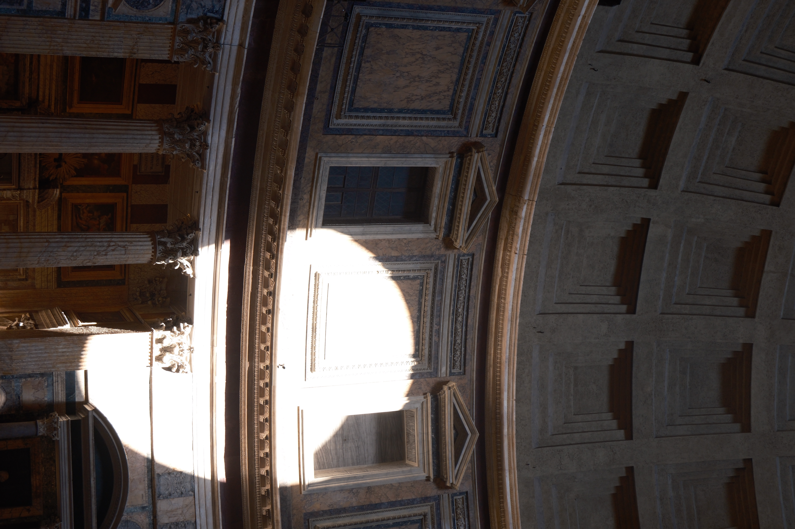
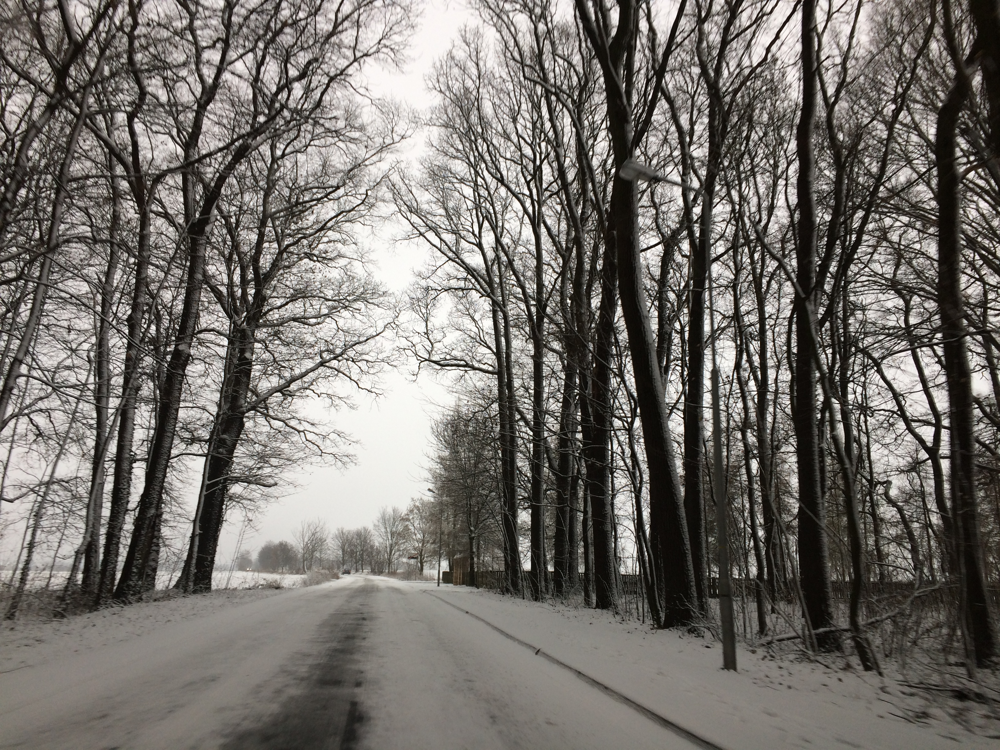
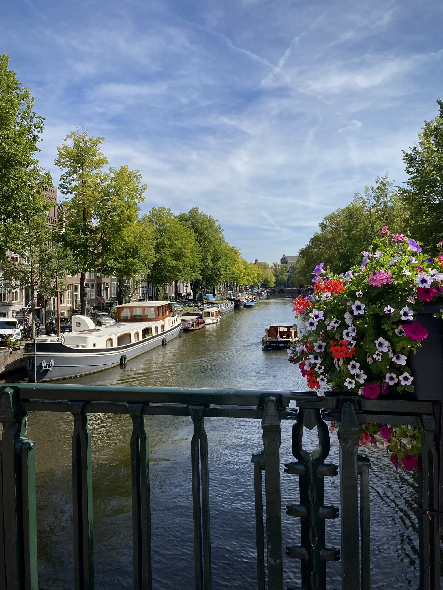
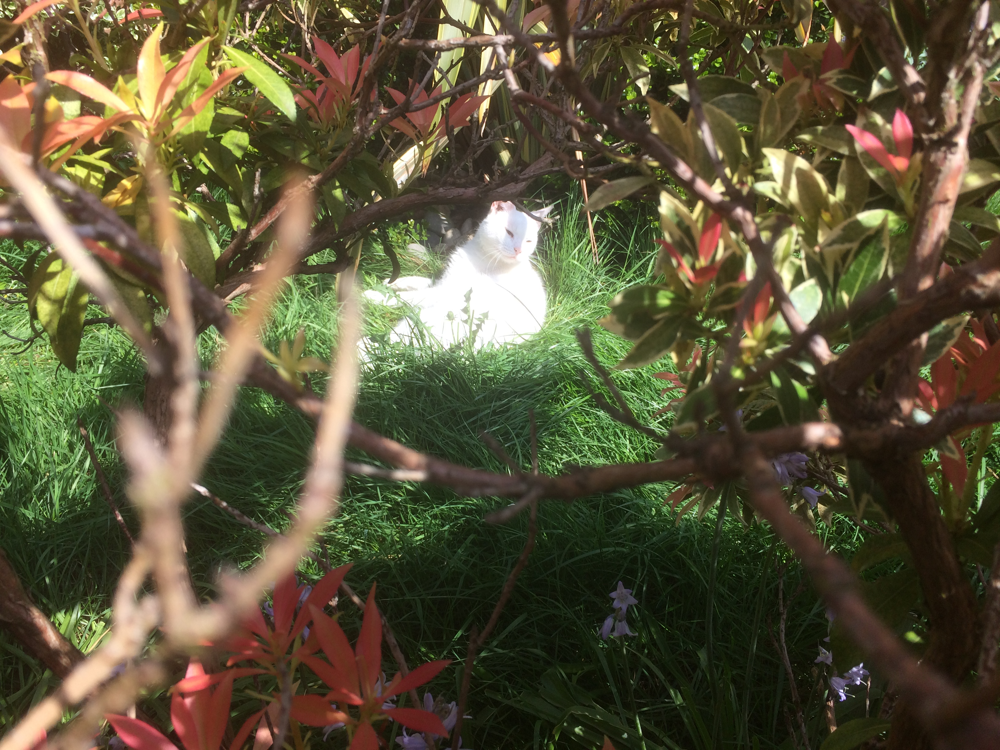
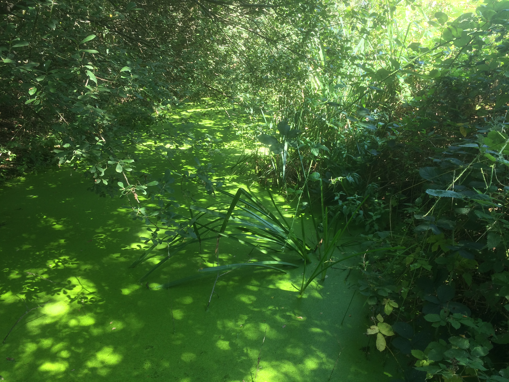

Through my lens.
Finding beauty in the everyday.
Some stories are told through numbers. Others, through a lens.

Light through the centuries.
In ancient Rome, the Pantheon's circular opening was believed to represent the heavens.
Lonely road.
A frozen road in Poland, where everything seems a little too quiet.
Along the canals.
A colourful glimpse of Amsterdam's waters.
Not Miata.
Hidden in the leaves, enjoying the afternoon sun.
All on green.
The sunlight is fighting its way through dense foliage.Quiet reverence.
Poland has many beautiful, historic buildings; This one in Wrocław is called Kościół św. Wojciecha.A different way of seeing the world.
Whether through lens or through data, there's always more to discover when you look a little closer.
Back to about me →